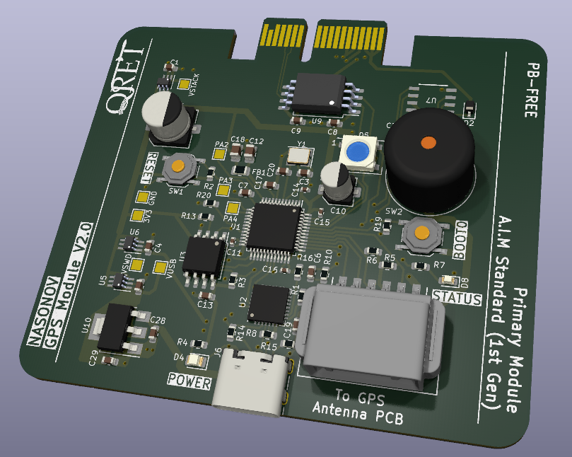
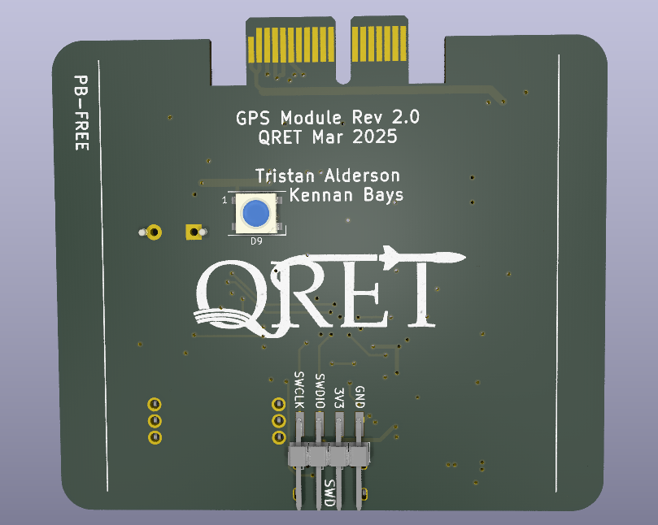
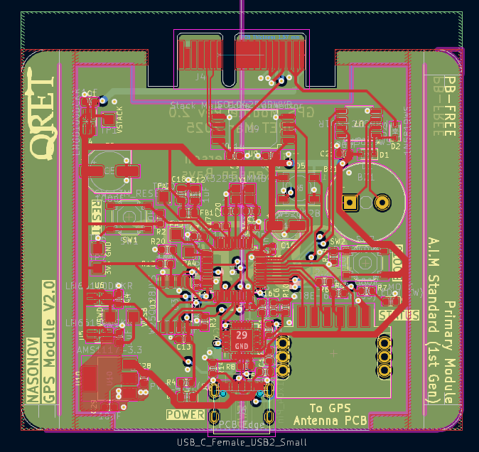
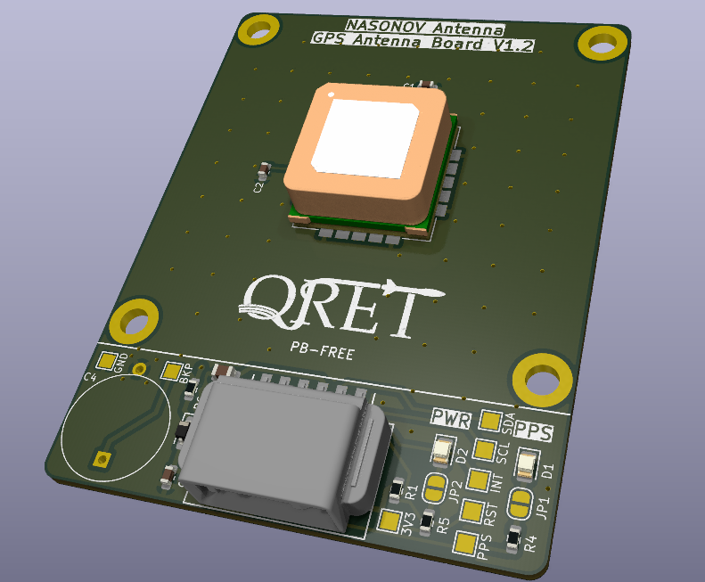
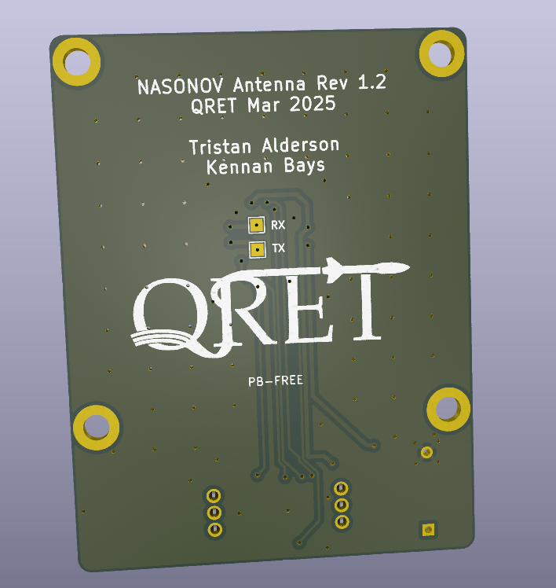
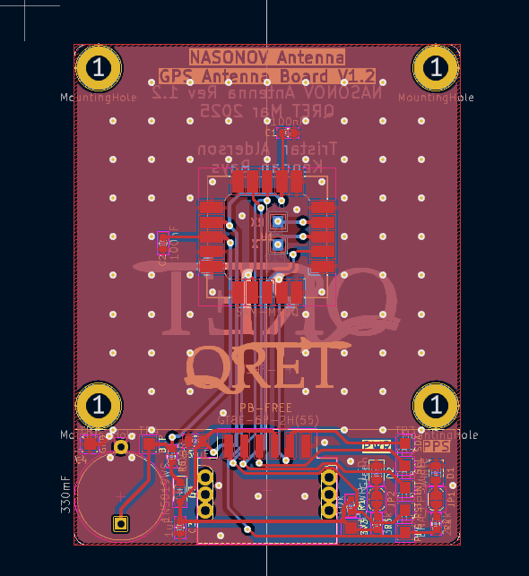

Project
GPS Recovery Module
GPS receiver daughter board for in-flight navigation and post-flight recovery, built around the u-blox SAM-M10Q.
The Problem
GPS modules tend to lose lock during high-G flight. Vibration rattles connections loose, and if the RF path picks up noise from nearby digital lines the receiver struggles to reacquire after motor burnout. Without a good position fix after apogee, you're searching a field by hand.
What I built
The SAM-M10Q is a GPS-on-module from u-blox that I designed onto a custom 2-layer daughter board. The board exposes I2C through a connector and keeps the GPS on its own PCB, physically separated from the comms module on the avionics stack. That separation is the point — by moving the GPS microcontroller and its RF antenna away from the CAN transceiver and WiFi radio, we cut down on the interference that kills signal quality.
One thing that actually helped was just making the daughter board a bit larger than the module strictly needs. The SAM-M10Q receives signals through the ground plane it's connected to, so a bigger board means a bigger ground plane and better reception. It's a simple trick but it made a measurable difference.
The I2C Stream Bug
Three weeks before launch, I caught a bug that would have corrupted our position telemetry. The SAM-M10Q returns 0xFF pad bytes when its FIFO is empty. I wasn't filtering these out before feeding the NMEA parser, so the parser would see garbage data and produce bad coordinates. Fixed it by checking the stream for pad bytes before parsing. I2C stream bug fix (July 2026)
That's the kind of bug you only catch during real bench testing with the actual hardware. A simulator would have given you clean NMEA sentences every time.
3D Flight Logging
The GPS module logs a 3D flight path to flash — latitude, longitude, and altitude at 10 Hz during flight, 1 Hz on the pad. That data reconstructs the trajectory for post-recovery analysis. The module also broadcasts position over the CAN bus so the telemetry system can downlink it via LoRa, and it sends satellite count at 0.2 Hz to conserve bandwidth.
Pre-Flight Check
The SAM-M10Q needs to be configured for 10 Hz / High-G mode using u-blox's u-center tool before flight. That's not something you can set in firmware — it's a persistent configuration stored in the module. We made that check mandatory in the pre-flight procedure after discovering it wasn't surviving power cycles. u-center pre-flight check requirement (July 2026)
Highlights
- Hardware: Custom 2-layer daughter board, backup power supply, recovery buzzer/LEDs. GPS backup power (Feb 2024)
- RF isolation: Physically separated from comms stack to reduce interference, enlarged ground plane for better reception
- 3D flight logging: Lat/lon/altitude at 10 Hz flight / 1 Hz pad, stored to flash for trajectory reconstruction
- I2C stream bug fix: Filtered SAM-M10Q's 0xFF pad bytes before NMEA parsing (caught 3 weeks before launch)
- Dual-rate telemetry: 10 Hz position broadcast, 0.2 Hz satellite count, phase-adaptive based on LaunchDetect events
- Pre-flight operational constraint: Mandatory u-center check for 10 Hz / High-G mode configuration
Media






3D Viewer
Drag to rotate, scroll to zoom.